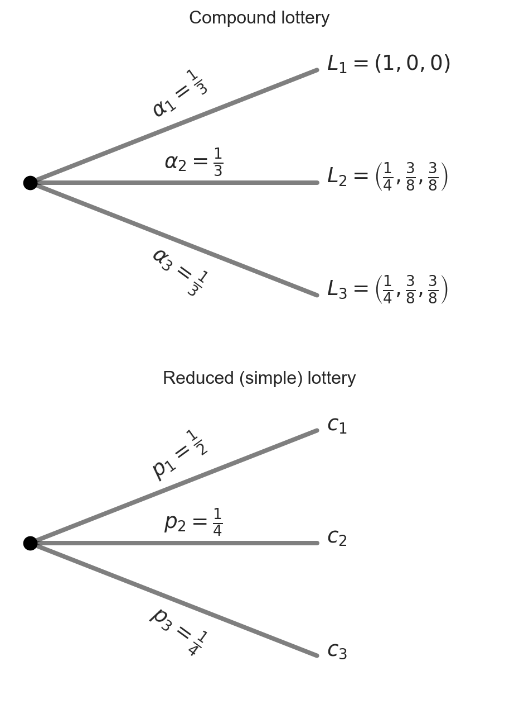
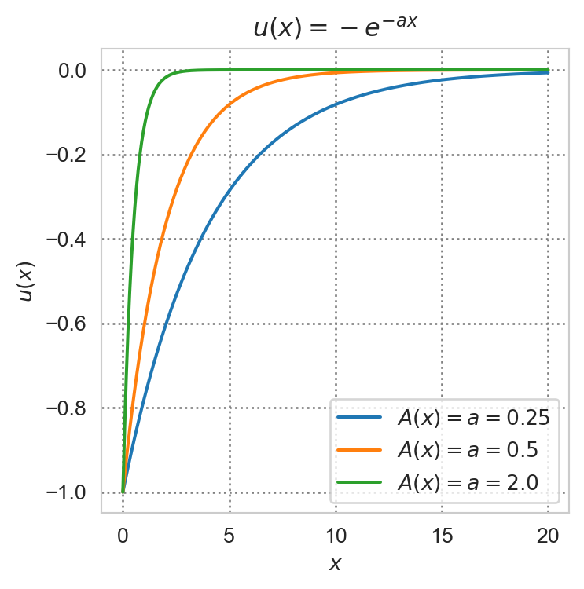
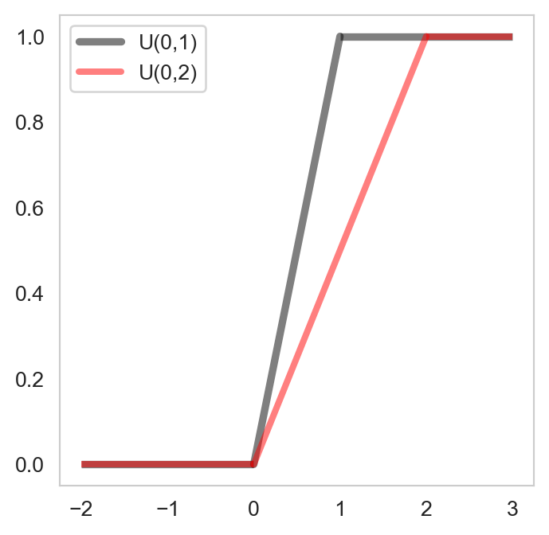

Chapter 6. Decision making under uncertainty
Life abounds with uncertainty, which can be viewed as danger or oppotunities. Pandemics are bad. Wars are bad. But if one has the guts to enter the market during the bear, she will be amply rewarded once it gets to the bull. If there were no uncertainty, there would be no bets. Many games and financial products would not have existed. Investment opportunities range from the high risk type, such as startups, cryptocurrencies, leveraged positions in equity trading to safer ones such as highly rated government bonds. We buy insurance to protect ourselves from the risk of sickness. We save more when we are uncertain about the future. Much of the human evolution has been marked with our species’ ingenuity in adapting to and thriving in uncertain environments. Making decisions under uncertainty is often hard, especially when the uncertainty is not quantifiable1. In this chapter, we will be mainly intererested in quantifiable uncertainty or risk, situations in which the decision-maker knows the underlying probability distribution of the random variable of interest (such as future earnings or losses due to sickness). Often times it is hard to make a choice based on pure calculation. Anyone who has ever invested knows that emotion plays no small role in our ability to succeed in a volatile environment.
1 Lotteries
The simplest way to model an uncertain prospect is by means of a lottery.
Definition 1 (Lottery) A simple loterry is a list of probabilities over a finite set of consequences or prizes. In particular let \(C=\{c_1,c_2,\dots,c_N\}\) be the set of consequences and \(p_n\) be the probability that \(c_n\) is realized. Then the simple lottery \(L\) over the set \(C\) is: \[ L = \{p_1,p_2,\dots,p_N\}, \tag{1}\]
where \(p_i = P(X=c_i)\) satisfying \(p_i\ge 0\) for all \(i=1,...,N\) and \(\sum_{i=1}^N p_i = 1.\)
Remark 1. In some textbooks a lottery is defined as a list of consequence-probability pairs instead of just a list of probabilities.
A lottery with \(p_i=1\) for some \(i\) is called a degenerated lottery.
Definition 2 (Simplex) The simplex or probability simplex of lotteries, denoted by \(\mathcal{L}\) (or \(\Delta\)) is the set of all simple lotteries over a set of outcomes: \[ \mathcal{L} = \{p \geq 0: \sum_{i=1}^N p_i = 1\}. \]
Sometimes the prizes are lotteries themselves. Lotteries over such prizes are called compound lotteries.
Definition 3 (Compound lottery) Let \((L_1, L_2, ... L_K)\) be simple lotteries over the same set of prizes (i.e., \(L_k\in \Delta\) for all \(k=1,...,K.\)) Let \(\alpha_k\) be the probability of obtaining \(L_k.\) Then the compound lottery can be written as: \[ (L_1,L_2,\dots,L_K;\alpha_1,\alpha_2,\dots,\alpha_K). \]
Note that any compound lottery can be reduced to a simple lottery: \[ L = \sum_{k=1}^K \alpha_k L_k. \tag{2}\]
According to the consequentialist hypothesis, only consequences and the probability associated to each consequence matters; the route through which a consequence is obtained is irrelevant. If you have taken a course in probability, you know that this is just the law of total probability.
2 Preferences over lotteries
Let \(C\) be the set of outcomes (consequences) and \(\mathcal{L}\) the set of all simple lotteries over \(C\)
A preference relation \(\succeq\) over \(\mathcal{L}\) is said to satisfy:
Completeness if for any \(L, L' \in \mathcal{L}\), either \(L\succeq L'\) or \(L'\succeq L\) or both
Transitivity if for any \(L, L', L'' \in \mathcal{L}\), if \(L\succeq L'\) and \(L' \succeq L''\) then \(L\succeq L''.\)
Continuity if for \(L, L' \in \mathcal{L}\) such that \(L\succ L'\), there are neighborhoods \(B(L)\) of \(L\) and \(B(L')\) of \(L'\) such that for all \(L_a \in B(L)\) and \(L_b \in B(L')\), the direction of preference is preserved: \(L_a \succ L_b.\) Intuitively, this means that if one strictly prefers a lottery to another, then a slight modification of the lotteries will not alter her ranking.
Independence axiom (IA) if for any \(L, L', L'' \in \mathcal{L}\) and \(\alpha \in (0,1)\): \[ L\succeq L' \iff \alpha L + (1-\alpha)L'' \succeq \alpha L' + (1-\alpha)L''. \tag{3}\]
Intuitively, this means that if one prefers a lottery to another then mixing each by the same proportion with a third lottery will not alter the preference ordering.
3 Expected utility theory
Definition 4 (Expected utility) The utility function \(U:\mathcal{L} \to \mathbb{R}\) has the expected utility form if there exist an assignment of numbers \((u_1, ..., u_N)\) to the \(N\) possible outcomes such that for every simple lottery \(L=(p_1,..., p_N) \in \mathcal{L}\), we have: \[ U(L) = \sum_{n=1}^N p_n u_n. \tag{4}\]
In other words, \(U\) has an expected utility form if there exists some utility function \(u:\mathbb{R}\to\mathbb{R}\) that assigns \(u_i\) to each consequence \(i\) of the lottery \(L.\) If such a representation exists, then \(U\) is referred to as the von-Neumann Morgenstern (vNM) utility function. We can then compare lotteries by computing the expected utilities associated with them. When does such a representation exist?
Theorem 1 (Representability) If a decision-maker’s preferences over lotteries satisfy completeness, transitivity, continuity and the independence axiom, then it has an expected utility reprsentation.
Observe that if an expected utility representation exists, then comparing lotteries is equivalent to comparing expected utilities derived from lotteries.
Since \(U\) is essentially a mathematical expectation, it is a linear map, i.e., let \((L_1,\dots,L_K;\alpha_1,\dots,\alpha_K)\) be a compound lottery, then:
\[ U\left(\sum_{k=1}^K L_k\right) = \sum_{k=1}^K U(L_k). \tag{5}\]
Another way to see this is to observe that the term inside the brackets on the LHS, by the consequentialist assumption, is a simple lottery:
\[ L = \left(\sum_{k=1}^K \alpha_k p^k_1, \sum_{k=1}^K \alpha_k p^k_2, \dots, \sum_{k=1}^K \alpha_k p^k_N\right) \]
over the set of outcomes \((u_1,u_2,\cdots,u_N),\) where \(p^k_i\) denotes the probability of \(u_i\) under lottery \(k.\) We can think of \(\sum_{k=1}^K \alpha_k p^k_i\) as the average probability of \(u_i\) across \(K\) lotteries (\(K\) different scenarii).
We can then rewrite the LHS as:
\[ U\left(\sum_{k=1}^K \alpha_k L_k\right) = U(L) = \sum_{i=1}^N \sum_{k=1}^K \alpha_k p^k_i u_i. \tag{6}\]
The RHS of Equation 5 can be written as:
\[ \sum_{k=1}^K \alpha_k \sum_{i=1}^N p^k_i u_i, \]
which is equivalent to Equation 6.
Another important property of the vNM utility is that it is cardinal, i.e., the value of the function \(U:\mathcal{L} \to \mathbb{R}\) is not just used for ranking; it also has a meaning. It is thus defined only up to a positive affine transformation, i.e., if \(U\) reprsents the preferences \(\succeq\) over the lotteries then so is \(aU + b\) for \(a>0\) and \(b\in\mathbb{R}.\) This is in contrast to the ordinal utility function introduced in the first chapter, which is preserved under any positive monotone transformation.
4 Indifference curves
How do indifference curves (IC) look like for preferences over lotteries? They must be straight lines and are parallel to one another.
Why straight lines? Suppose \(L\) and \(L'\) lie on the same IC, i.e., \(L \sim L'.\) By the IA, if we mix \(L\) and \(L'\) with the same lottery by the same proportion, our preference ranking would remain unchanged. Mathematically for any \(\alpha\in[0,1]:\)
\[ \begin{aligned} L &\sim L' \\ \alpha L + (1-\alpha)L &\sim \alpha L' + (1-\alpha)L \\ L &\sim \alpha L' + (1-\alpha)L. \end{aligned} \]
In other words, if we fix any two lotteries on the same IC, then any convex combination between them (the line connecting the two lotteries) must lie on the same IC. Since \(L\) and \(L'\) can be arbitrarily chosen, it follows that an IC must be a straight line.
Why must ICs be parallel to one another? Suppose by contrast there exist two indifference curves \(IC_1\) and \(IC_2\) intersecting at some lottery \(L.\) Let \(L_1\) be a lottery on \(IC_1\) and \(L_2\) be a lottery on \(IC_2\) and WLOG suppose that \(U(L_2) > U(L_1).\) Now \(L \in IC_1\) hence \(U(L)=U(L_1).\) But \(L \in IC_2\) implying \(U(L)=U(L_2) > U(L_1) = U(L),\) a contradiction. Hence no two ICs can intersect.
5 Money lotteries
We now consider a more general space of consequences \(C=\mathbb{R}.\) In other words, the outcomes are a continuous variables. The lottery will thus be the probability law underlying some continuous random variable \(X.\) In particular we define money lotteries by means of the cdf of \(X,\) that is \(F:\mathbb{R}\to[0,1]\) defined by:
\[ F(x) = Pr(X \leq x), \quad x \in \mathbb{R}. \]
From probability theory we know that a random variable is characterized by its cdf. The same reduction principle applies to compound lotteries. In particular, let \(F_1(x), F_2(x),\dots,F_K(x)\) be \(K\) simple money lotteries, each with probability \(\alpha_k\) of occurence. Then the compound lottery can be represented as: \[ F(x) = \sum_{k=1}^K \alpha_k F_k(x). \tag{7}\]
We now consider positive monetary amounts, letting \(C=\mathbb{R}_+.\) The expected utility derived from the lottery \(F(x)\) of a decision-maker whose preferences admit an expected utility representation is:
\[ U(F) \equiv \mathbb{E}[u(X)] = \int u(x) dF(x) = \int u(x)f(x)dx, \tag{8}\]
where \(f:\mathbb{R}\to\mathbb{R}_+\) is the pdf of \(X,\) if it exists (i.e. if the cdf is absolutely continuous), and \(u(x)\) is the utility obtained from \(x\) dollars. The function \(u\) is assumed to be continuous, increasing and bounded.2 It is often referred to as the Bernoulli utility function.
Example 1 (Mean-variance utility) Let \(u:\mathbb{R}_+\to\mathbb{R}\) be defined by \(u(x)=\beta x^2 + \gamma x,\) where \(\gamma >0, \: \beta < 0\) and \(F\) the cdf of \(X.\) Then: \[ \begin{aligned} \mathbb{E}u(X) = U(F) &= \int u(x) dF(x) \\ &= \int(\beta x^2 + \gamma x) dF(x) \\ &= \beta \int x^2 dF(x) + \gamma \int x dF(x) \\ &= \beta \sigma^2_X + \gamma \mu_x + \beta \mu_x^2, \end{aligned} \]
where \(\sigma^2_X\) and \(\mu_X\) are the variance and mean of \(X,\) respectively. Thus the expected utility derived from \(X\) depends only on the mean and the variance of \(X,\) i.e., only on the first two moments of this random variable.3
6 Risk preferences
6.1 Three preferences towards risk
Let \(X\) be a positive-valued random variable that an individual receives. We say that she is risk-averse (or exhibits risk aversion) if:
\[ \mathbb{E}[u(X)] \leq u(\mathbb{E}[X]). \tag{9}\] \[ \int u(x)dF(x) \leq u\left(\int x dF(x)\right). \tag{10}\]
If the inequality (9) or (10) reverts, then the individual is risk-loving. If the inequality sign becomes an equality, she is risk-neutral. Mathematically, risk aversion is captured by a concave Bernoulli utility function \(u\), risk loving by a convex and risk neutrality by a linear Bernoulli utility function respectively.
Intuitively, someone who dislikes risk would prefer a sure gain equivalent to the mean of a random variable rather than playing the lottery over the outcomes of the random variable.
Example 2 Consider a game in which one is proposed two options. In the first option, she can either win nothing or $10,000 with equal probabilities (by tossing a fair coin, for example). In the second, she can walk away with $5000 for sure. Which option will she choose? If she is (strictly) risk-averse, then she will (strictly) prefer the second. If risk-loving, she will prefer the first. If risk-neutral, she will be indifferent.
flowchart TB
opt1[Option 1] -- 0.5 --> $10000
opt1 -- 0.5 --> $0
flowchart TB
opt2[Option 2] -- 1 --> $5000
6.3 Measure of risk aversion
There are two common measures of risk aversion: the (Arrow-Pratt) coefficient of absolute risk aversion and coefficient of relative risk aversion.
Definition 7 (Absolute and relative risk aversion) The Arrow-Pratt coefficient of absolute risk aversion for a decision maker with Bernoulli utility function \(u:\mathbb{R}_+\to\mathbb{R}\) is: \[ A(x) = -\frac{u''(x)}{u'(x)}. \tag{12}\] The coefficient of relative risk aversion for the same decision-maker is: \[ R(x) = - \frac{u''(x)x}{u'(x)}. \tag{13}\]
Why don’t we just use the convexity of \(u,\) namely the second derivative of \(u?\) Because this measure has an undesirable property: it is not invariant to a positive linear transformation of \(u.\)
Example 3 (CARA utility) The following utility satisfies constant absolute risk aversion \[ u(x) = -e^{-ax}, \tag{14}\] where \(a>0\) is the coefficient of absolute risk aversion.
Example 4 (CRRA utility) The following utility satisfies constant relative risk aversion \[ u(x) = \begin{cases} \frac{x^{1-\sigma}-1}{1-\sigma}, & \sigma \neq 1 \\ \ln (x), & \sigma = 1. \end{cases} \tag{15}\] The coefficient of constasnt relative risk aversion is \(R(x)=\sigma.\) Note that the vNM utility function is homothetic if and only if the Bernoulli utility function is satisfies CRRA.

7 Comparing payoff distributions
The previous section compares different attitudes towards risk (uncertain payoffs). We now compare distributions of payoff (lotteries) using the concept of stochastic dominance.
7.1 First order stochastic dominance (FOSD)
Definition 8 (FOSD) Lottery \(F\) is said to first order stochastically dominate (FOSD) lottery \(G\) if for all payoff \(x\): \[ F(x) \leq G(x). \]
Intuitively, the stochastically dominant lottery concentrates more probability weight on higher payoff values. Graphically, \(F\) FOSD \(G\) if \(F\) is below \(G\).
Example 5 Suppose \(X\sim U(0,1)\) and \(Y\sim U(0,2).\) Denote the cdf of \(X\) by \(F_X\) and the cdf of \(Y\) by \(F_Y.\) Then \(F_Y\) FOSD \(F_X.\) Indeed, the cdf of a \(U(a,b)\) random variable is given by: \[ F(x) = \begin{cases} 0 & x < a \\ \frac{x - a}{b - a} & x \in [a, b] \\ 1 & x > b. \end{cases} \tag{16}\] Hence \[ F_X(x) = \begin{cases} 0 & x < 0 \\ x & x \in [0, 1] \\ 1 & x > 1. \end{cases} \] and \[ F_Y(x) = \begin{cases} 0 & x < 0 \\ \frac{x}{2} & x \in [0, 2] \\ 1 & x > 2. \end{cases} \]
Clearly \(F_Y(x) \leq F_X(x)\) for all \(x,\) implying that \(F_Y\) FOSD \(F_X.\)

7.2 Second order stochastic dominance (SOSD)
Definition 9 (SOSD) Lottery \(F\) is said to second order stochastically dominate lottery \(G,\) denoted \(F\) SOSD \(G,\) if they have the same mean and for every nondecreasing concave utility function \(u:\mathbb{R}\to\mathbb{R},\) the expected utility under \(F\) is greater than that under \(G.\) Mathematically:
\[ \begin{aligned} \mathbb{E}_F[X] &= \mathbb{E}_G[X], \\ \mathbb{E}_F [u(X)] &\geq \mathbb{E}_G[u(X)]. \end{aligned} \] or equivalently: \[ \begin{aligned} \int x dF(x) &= \int x dG(x), \\ \int u(x) dF(x) &\geq \int u(x) dG(x). \end{aligned} \]
Remark 2. Note that the inequality condition in Definition 9 can be shown to be equivalent to: \[ \int_a^x [G(t) - F(t)]dt \geq 0,\quad x \in [a,b]. \tag{17}\]
Example 6 (Mean-preserving spread) Consider again two random payoffs \(X\) and \(Y\) where \(X\sim U(a,b)\) and \(Y\sim U(a-\epsilon,b+\epsilon),\) where \(b>a>0\) and \(\epsilon >0.\) Observe that both \(X\) and \(Y\) have the same mean equal to \((b-a)/2\) but the distribution of \(Y\) is more spread out about the mean compared to that of \(X.\) We say that the distribution of \(Y\) is obtained by a mean-preserving spread of the distribution of \(X,\) hence is riskier. Let us show that \(F_X\) SOSD \(F_Y.\) Denote \(f_X\) and \(f_Y\) the pdfs of \(X\) and \(Y,\) respectively. Note that: \[ \begin{aligned} f_X(x) &= \frac{1}{b-a}\mathbb{1}_{x\in[a,b]}, \\ f_Y(x) &= \frac{1}{b-a+2\epsilon}\mathbb{1}_{x\in[a-\epsilon,b+\epsilon]}, \end{aligned} \] where \(\mathbb{1}_{x\in[c,d]}\) is an indicator function taking value of one if \(x\in[c,d]\) and zero otherwise. It is easy to check that the cdfs of \(X\) and \(Y\) can be written as follows: \[ F_X(x) = \begin{cases} 0 & x < a \\ \frac{x-a}{b-a} & x \in [a, b] \\ 1 & x > b. \end{cases} \] and \[ F_Y(x) = \begin{cases} 0 & x < a-\epsilon \\ \frac{x-a+\epsilon}{b-a+2\epsilon} & x \in [a-\epsilon,b+\epsilon] \\ 1 & x > b+\epsilon. \end{cases} \] We will be proving SOSD using (17). In particular, we only need to verify this condition for \(x\in[a,b],\) namely: \[ \int_{a}^x [F_Y(t) - F_X(t)] dt \geq 0,\quad \forall x\in[a,b]. \] Indeed: \[ \begin{aligned} F_Y(t) - F_X(t) &= \frac{x-a-\epsilon}{b-a+2\epsilon} - \frac{x-a}{b-a} \\ &=\frac{\epsilon (a+b-2t)}{(b-a+2\epsilon)(b-a)} \\ \implies \int_{a}^x [F_Y(t) - F_X(t)] dt &= \frac{\epsilon}{(b-a+2\epsilon)(b-a)}\left[(a+b)x - x^2\right]_a^x \\ &= \frac{\epsilon}{(b-a+2\epsilon)(b-a)}(x-a)(b-x) \\ &\geq 0, \end{aligned} \] where the last inequality holds strictly for \(x\in(a,b).\)
7.3 Other measures of stochastic dominance
Let \(X\) be a random variable (such as monetary payoffs). Let \(F\) and \(G\) are two cdfs over the support of \(X\). Suppose also that the pdf associated with \(F\) and \(G\) exist and are denoted by \(f\) and \(g,\) respectively.
7.3.1 Hazard rate dominance (HRD)
The hazard rate of a lottery \(F\) is given by:
\[ HR_F(x) = \frac{f(x)}{1 - F(x)}. \tag{18}\]
Intuitively, the hazard rate is the conditional density of \(X\) given the probability of the payoff exceeding \(x.\)
We say that \(F\) dominates \(G\) in terms of the hazard rate if:
\[ HR_F(x) \leq HR_G(x), \quad \forall x. \tag{19}\]
Exercise 1 Show that HRD implies FOSD.
7.3.2 Reverse hazard rate dominance (RHRD)
The reverse hazard rate of a lottery \(F\) is given by:
\[ RHR_F(x) = \frac{f(x)}{F(x)}. \tag{20}\]
Intuitively, the reverse hazard rate is the conditional density of \(X\) given the probability of the payoff being less than \(x.\)
We say that \(F\) dominates \(G\) in terms of the reverse hazard rate if:
\[ HR_F(x) \geq HR_G(x), \quad \forall x. \tag{21}\]
Exercise 2 Show that RHRD implies FOSD.
7.3.3 Likelihood ration dominance (LRD)
We say that \(F\) dominates \(G\) in terms of the likelihood ratio if:
\[ \frac{f(x)}{g(x)} \leq \frac{f(y)}{g(y)}, \quad \forall x < y. \tag{22}\]
Exercise 3 Show that LRD implies HRD.
Hence LRD is a very strong notion of stochastic dominance, it implies HRD which in turn implies FOSD.
8 Paradoxes and alternative theories
8.1 Allais’s paradox
The Allais’s paradox illustrates the violation of the independence axiom (IA). Consider the set of prizes \(C=\{\$2.5M, \$0.5M, 0\}\) and two lotteries over \(C:\) \[ L_1 = (0, 1, 0), \quad L_1'=\left(\frac{10}{100}, \frac{89}{100}, \frac{1}{100}\right). \tag{23}\]
Most respondents in controlled experiments will choose \(L_1,\) which gives a sure prize of 0.5M: \[ L_1 \succ L_1'\iff u_{0.5} > \frac{10}{100}u_{2.5} + \frac{89}{100}u_{0.5} + \frac{1}{100}u_{0}. \tag{24}\]
Now consider the same set of outcomes but two other lotteries: \[ L_2=\left(0, \frac{11}{100}, \frac{89}{100}\right), \quad L_2'=\left(\frac{10}{100}, 0, \frac{90}{100}\right). \tag{25}\]
Most people strictly prefer \(L_2'\) over \(L_2.\) By the IA if we add \(\frac{89}{100}u_0 - \frac{89}{100}u_{0.5}\) to both sides of Equation 24 we should preserve the direction of the inequality, this yields: \[
\frac{11}{100}u_{0.5} + \frac{89}{100}u_{0} > \frac{10}{100}u_{5} + \frac{90}{100}u_{0}.
\]
But a strict preference of \(L_2'\) over \(L_2\) implies: \[\frac{10}{100}u_{5} + \frac{90}{100}u_{0} > \frac{11}{100}u_{0.5} + \frac{89}{100}u_{0},
\] a contradiction.
One explanation for this paradox is the unrealistic values of probabilities presented, which are close to one or zero and hence are rarely encountered in practice. Another justification comes from regret theory, according to which individuals do not wish to regret a sure win.
8.2 Ellsberg’s paradox and ambiguity aversion
In real life situations, we often have to form some probabilistic judgement while making a decision. In tossing a fair coin, we know that the probability of obtaining either results is one half. But in predicting the probability of a presidential candidate winning, we often need to form some subjective evaluation. One nice thing about subjective probabilities is that they can evolve with new information, and the Bayesian school of thoughts provides us with a natural framework to update our beliefs with new information. The space is too limited here to present the theory of subjective probability and its version of expected utility, but we shall attempt to get a glimpse at it by presenting one of the most (if not the most) famous thought experiments that refreshed and ignited research interest in this domain.
There are several versions of this paradox. One of such is the following. In this experiment, Ellsberg presents the subjects with an urn containing 90 balls, 30 of which are known to be red, the remaining 60 balls are black or yellow in unknown proportion. The experiment consists of two parts:
A ball is randomly drawn from the urn. Subjects are asked to bet on the color of the ball, choosing between on red and black. The ball is then returned to the urn.
A ball is drawn randomly from the same urn. Subjects are asked to choose between two choices again, but now between red or yellow and black or yellow.
Suppose that betting correctly would result in $1000 prize. How would you make your choice in the first part, and in the second part of the experiment?
In the first part of the experiment, most subjects prefer betting on red. In the second part, most prefer betting on black or yellow. This is paradoxical because choosing red in the first experiment implies that their subjective probability of the ball being black, \(P(B)\) is less than \(1/3,\) the objectively (known) probability of the ball being red. This implies that their subjective probability of the ball being yellow, \(P(Y),\) is greater than \(1/3.\) On the other hand the probability of the ball being black or yellow is \(P(B\cup Y)=2/3,\) whereas \(P(R\cup Y)=P(R)+P(Y)=1/3+P(Y).\) Betting on black or yellow in the second part would imply \(P(Y)<1/3,\) contradicting the subjective evaluation of the same individual in the first part. One explanation for this behavior is ambiguity aversion, which leads individuals to prefer situations with known odds.
The literature on ambiguity aversion is extensive and growing. Seminal works include the maximin expected utility model (MEU) of Gilboa and Smeidler (1989), the smooth ambiguity aversion model of Klibanoff et al. (2005,2009), to name just a few.
9 Exercises
Exercise 4 Create a plot similar to Figure 3 for the cases where \(u\) is convex and linear. What are the CE and RP in each case?
Exercise 5 Prove that the Arrow-Pratt coefficient of absolute risk aversion defined in (12) is invariant to a positive linear transformation.
Exercise 6 Consider again the mean-variance utility function in Example 1.
- Show that it exhibits decreasing absolute risk aversion.
- Consider a decision maker with initial wealth \(w\) deciding on the proportion of wealth \(\alpha\in[0,1]\) to invest in a risky asset \(X\) with mean and standard deviation \(\mu_X\) and \(\sigma_X,\) respectively. What is the value of \(\alpha\) that maximizes the expected utility of the decision maker? How does this value change in wealth? Interpret.
Exercise 7 (Optimal insurance demand) Consider an individual with the utility function: \[ u(c, h) = \ln c - \frac{L}{h} \quad L>0, \] where \(c\) is his consumption expenditure and \(h\) his health insurance expenditure, \(L\) is a random variable indicating monetary loss due to sickness.
For simplicity, the loss distribution can be described as: \[ L = \begin{cases} 1 & \text{with probability } \gamma \in [0,1] \\ 0 & \text{with probability } 1 - \gamma. \end{cases} \] The individual total wealth is \(w>0.\)
Determine the optimal consumption and health insurance expenditures. How do they vary in wealth and the probability of sickness?
Footnotes
A situation known as ambiguity or Knightian uncertainty. Under ambiguity, unlike under risk, the decision-maker does not know the probability law underlying the random variable of interest. Sometimes in the vernacular, risk is referred to as the known unknown and ambiguity as the unknown unknown. Even though they are both uncertainty, ambiguity has been documented to result in higher cognitive load than risk because while risk is processed by the rational powerhouse of our brain, the prefrontal cortex, ambiguity tends to trigger fear and anxiety which are associated with the amygdala in our brain.↩︎
Boundedness is needed to rule out the St.Petersburg paradox.↩︎
Observe that this utility function is increasing only for \(x \geq -2\beta/\gamma.\)↩︎